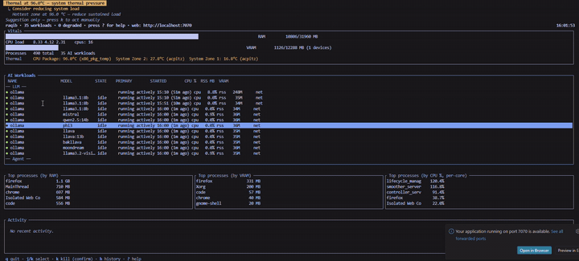
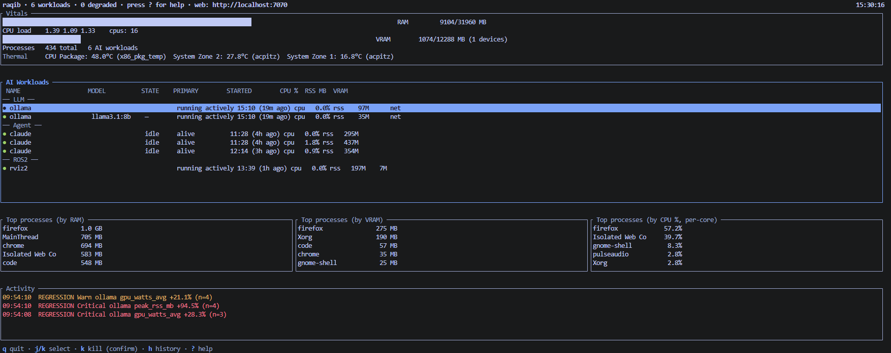
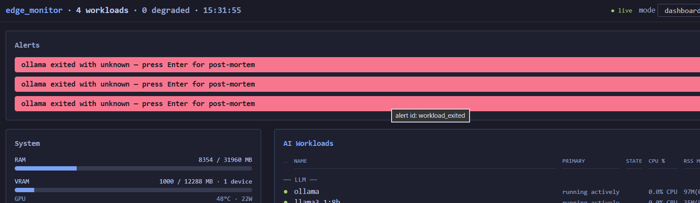
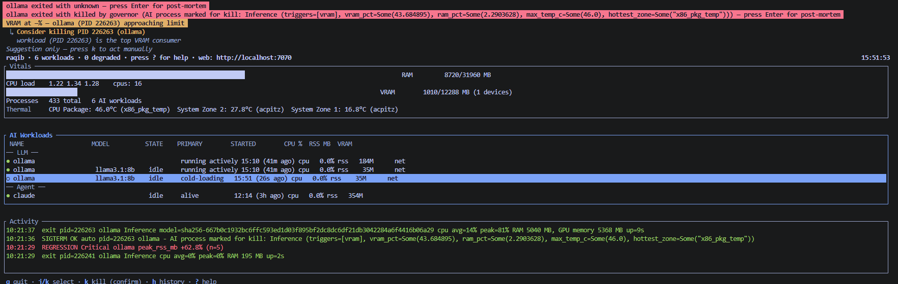

raqib documentation
One screen for every workload competing for your GPU — and an opt-in governor that can evict the one starving the rest.
What is raqib?
raqib is a workload-aware resource monitor for Linux boxes running a mix of AI and robotics workloads that share a single GPU. It surfaces every process fighting over VRAM / RAM / thermal / CPU — ROS 2 nodes, LLM servers (ollama, vLLM, llama.cpp), agents, model downloads — in a single terminal UI and a web dashboard. Unlike read-only tools (nvtop, btop, ollama ps), it can also act: an opt-in governor terminates a workload that's starving the others, with an allowlist that always wins and safety gates that fail closed.
Who is it for?
Robotics + local-AI developers on a single shared GPU box. If you've watched an LLM inference server or a runaway training job hang your ROS stack, or juggled three terminals to see which of your workloads is eating the VRAM — raqib is written for you.
New here?
Installation → First run gets you a live dashboard in three commands. From there, The TUI and The web dashboard cover the two interfaces; The governor covers the differentiator; the two hands-on kill demos show it working end-to-end on a canary + a real ollama model.
🖥️ One pane of glass
Every GPU / VRAM / CPU / thermal workload in one view — stop juggling nvtop + btop + ollama ps.
🎯 Honest metrics
Unmeasurable VRAM shows —, never a fake 0. A blank means "unknown," not "idle."
📊 Live LLM health
Reachability + tokens/sec + KV-cache % for ollama, vLLM, and llama.cpp — scraped live.
🛡️ The governor
Off by default, can't be armed from the web, four gates before every kill. Proven live + 19-cell test matrix green.
See it in action
The 64-second narrated tour walks the same arc as this guide — the workload mix, the monitoring view, the governor firing on its own (with an on-screen "reconstruction from audit log" label until the live-fire reshoot lands), and the four safety gates.
▶ Play the video — narrated (Piper offline TTS), captions burned in, 1920×1080. Autoplay is muted per browser policy; click to unmute if you want the VO.
{kind=link}
6-second monitoring loop (README hero)
A silent GIF loop of the live TUI. This is what shows up at the top of the GitHub README — no click required, plays instantly, no kill happens in it (that story lands in the video above and the ollama recipe).

Screenshots
Live captures from the dev box on the current main branch. Every image is governed by docs/MEDIA.md's claim table — nothing here is captioned with a feature it doesn't visibly show.


localhost:7070 — the same live data in the browser. Read state, tune thresholds, persist to your TOML.
Installation
Linux only. raqib reads /proc, GPU NVML, thermal sysfs, and (optionally) the ROS 2 graph. NVIDIA GPUs get full VRAM/thermal/power metrics; other setups still get process, CPU, and memory monitoring. Tested on Ubuntu 22.04 / 24.04.
Prerequisites
sudo apt update
sudo apt install -y build-essential pkg-config libssl-dev git curl
# Rust (if not already installed)
curl --proto '=https' --tlsv1.2 -sSf https://sh.rustup.rs | sh -s -- -y
source "$HOME/.cargo/env"For NVIDIA GPU metrics: a working nvidia-smi means NVML is already present — no extra package needed.
From source (available now)
git clone https://github.com/CTX-012/Raqib.git raqib
cd raqib
cargo build --release
sudo install -m755 target/release/raqib /usr/local/bin/raqib
raqib --versionPrebuilt binary / cargo install (once published)
# once releases are published:
curl -L https://github.com/CTX-012/Raqib/releases/latest/download/raqib-x86_64-linux -o raqib
chmod +x raqib && sudo install -m755 raqib /usr/local/bin/raqib
# once on crates.io:
cargo install raqibFirst run
raqib init # writes a commented, safe-by-default config to ~/.config/raqib/raqib.toml
raqib # starts: TUI + web dashboard on http://localhost:7070raqib init writes a config with monitoring on and the governor off. It's heavily commented — read it before changing anything.
Config discovery order
raqib looks for its config in this order:
--config <path>(explicit)./raqib.toml~/.config/raqib/raqib.toml← whereraqib initwrites/etc/raqib/raqib.toml
Running the web dashboard
| Mode | Command |
|---|---|
| Local only (default) | raqib — web on 127.0.0.1:7070 |
| On your LAN | raqib --bind 0.0.0.0 — set an auth_token first! |
| Headless / service | nohup raqib --no-ui --port 7070 > /tmp/raqib.log 2>&1 & disown |
| No web at all | raqib --no-web |
⚠️ Use --no-ui for background/service runs — the TUI grabs the terminal and gets suspended otherwise.
Run as a systemd service
# /etc/systemd/system/raqib.service
[Unit]
Description=raqib — GPU workload monitor
After=network.target
[Service]
Type=simple
ExecStart=/usr/local/bin/raqib --no-ui --bind 127.0.0.1 --port 7070
Restart=on-failure
User=YOUR_USER
[Install]
WantedBy=multi-user.targetsudo systemctl daemon-reload && sudo systemctl enable --now raqib
sudo systemctl status raqibThe TUI
What you get when you run raqib (no subcommand, no --no-ui): a full-screen terminal dashboard with these panels, all populated live on the tick loop:
| Panel | Shows |
|---|---|
| Header | Version, uptime, tick count, web URL (rendered as localhost when bound to 0.0.0.0). |
| Vitals | RAM used/total + bar, VRAM used/total + bar + device count, GPU temp + power, CPU load average, thermal-zone list (top 10 hottest, colour-coded amber/red). |
| AI Workloads | Detected LLM / ROS 2 / framework / agent processes grouped by category. Columns: name, PID, category, CPU %, RSS MB, VRAM MB, tokens/sec, KV-cache %, probe status. |
| Top Processes | Top-N processes by the current sort dimension (t cycles: RAM → VRAM → CPU). VRAM column shows — when unattributable, never a fake 0. |
| Activity Feed | Rolling event log — kills, threshold crossings, workload starts / stops. Auto-scrolls. |
| Alerts | Active alert IDs with sustain-time counters. a acknowledges. |
TUI keybindings
Verified against src/ui/input.rs. All single-letter keys, no modifiers unless noted.
| Key | Action |
|---|---|
| ? | Toggle help overlay (shows this table + the "Web UI: 127.0.0.1:7070" banner). |
| q | Quit. Also Ctrl+C. |
| Esc | Cascade-escape: close overlay → cancel confirm → clear selection → (nothing). |
| j / ↓ | Select next process / workload. |
| K (shift) / ↑ | Select previous. |
| Enter | Open the detail card for the selected workload / process. |
| k | Kill selected — opens the confirm card (requires no arming, primary manual path; see The governor). A second Enter sends SIGTERM; Esc cancels. |
| t | Cycle top-processes sort: RAM → VRAM → CPU. |
| a | Acknowledge active alerts (clears them from the panel; audit trail preserved). |
| h | Toggle history overlay — recent post-mortem curves for killed / vanished processes. |
| H (shift) | Toggle detailed history-events log. |
The TUI is one of three surfaces (TUI + web +--no-uiheadless). All three see the same tick loop; changes made in the web Settings panel are visible in the TUI on the next tick, and vice versa. Themes:--theme dark(default),light, orhigh-contrast.
The web dashboard
Default URL: http://127.0.0.1:7070/. The dashboard is a single-page Svelte app served from the binary — no external assets, no CDN, one open TCP port. It supports five modes; switch via the mode selector in the header, or by URL query for shareable / kiosk-mode deep links:
| Mode | URL | Shows |
|---|---|---|
| Dashboard | / or /?mode=dashboard | Default full view — Vitals, Workloads, Top Processes, Activity, Alerts, and (collapsible) Settings, all live on a 1 Hz poll of /api/snapshot. |
| Focus | /?mode=focus&pid=<N> | One workload, deep — live sparklines of CPU / RSS / VRAM / tokens-per-sec for the chosen PID. When the PID vanishes, the buffer freezes so you keep the last-known trajectory instead of a blank. |
| Timeline | /?mode=timeline | Chronological incident review — every activity event in reverse-chronological order, with the full postmortem card mounted inline for terminated processes. |
| Kiosk | /?mode=kiosk | Glance-only wall monitor — huge tiles, high contrast, colour-coded to the same thermal / VRAM / RAM thresholds. Designed for a shared TV in the lab. |
| History | /?mode=history | What happened before you looked — the event log + on-demand per-PID trajectory (via /api/history/trajectory/:pid) for anything killed or vanished in the retention window. |
The Settings panel (editable + persisted)
The Settings panel (Settings ▸ in the header) lets you edit the six most-tuned thresholds + kill_sustain_secs live and — critically — persists them to your raqib.toml with comments, blank lines, and key order preserved. The freshly-shipped polish adds three properties worth understanding:
- Formatting-preserving Save. Uses
toml_editunder the hood — your hand-authored comments (e.g.# KILLER IS ARMED — leave this alone) survive every round-trip. The plaintoml-crate implementation this replaced used to scramble the whole file on every Save. - Concurrent-write guard. Two Save clicks at the same second cannot produce a torn file — an in-process mutex plus atomic
rename(2)guarantees the file reader (your editor, another process) sees the whole old file or the whole new one, never a partial write. - Armed-state warning. If the governor is currently armed (
auto_actuate = true), a red ⚠ Governor is ARMED banner appears above the form with a mandatory checkbox: "I understand — apply this change to a live, armed governor." The Save button stays disabled until you tick it. Threshold changes take effect on the very next tick — a slider dragged 95 → 30 can immediately fire kills against real processes — so the checkbox is the deliberate speed-bump.
Every settings POST also produces a tracing::info! audit line with the new values and an armed=<bool> field — grep armed=true in your log for the trail of every live-threshold edit against an armed governor.
What the panel does NOT let you edit (by deliberate design): auto_actuate, default_ai_action, allowlist, blocklist, and the rate-limit fields. Arming the killer is a host action — SSH in, edit the TOML, restart. Seven tripwire tests pin this boundary end-to-end (schema-firewall at serde, structural exclusion at the RuntimeTunables type, partial-persist guard at disk, plus the four governor kill-path gates).
Configuration
raqib init writes a fully-commented file. Here's every section:
# Every value shown here is the actual default. Omit a section /
# key entirely to inherit it — you only need to write what you're
# changing.
[web]
# Fresh install REFUSES to start unless you pick ONE of these:
allow_no_auth = true # OK on the default localhost bind — the port is
# only reachable from processes on this host.
# auth_token = "your-secret" # required for exposed/untrusted networks;
# clients send: Authorization: Bearer <token>
[governor]
# auto_actuate = true is THE ARM. Off by default. The web API
# CANNOT flip this — schema-firewalled at the serde deserializer,
# structurally excluded from RuntimeTunables, and pinned by seven
# tripwire tests. Arming requires editing this file + restart.
auto_actuate = false
kill_sustain_secs = 10 # a breach must persist this long before a kill fires
[policy]
default_ai_action = "Allow" # "Allow" = nothing killable by default (safe posture)
# "Kill" = AI/robotics workloads killable when armed
allowlist = [ # comms that are NEVER killed (matched vs /proc/<pid>/comm)
"systemd", "init", "sshd", "bash", "zsh", "sh",
"kworker", "kthreadd",
]
blocklist = [] # comms that ARE killable (breach still required)
sigterm_grace_secs = 5 # SIGTERM → wait → SIGKILL grace period
rate_limit_max_kills = 3 # at most N automated kills…
rate_limit_window_secs = 60 # …per M-second window
[thresholds]
# All eight fall back to ux_contract constants when omitted.
vram_attention_pct = 85.0 # attention level (must be ≤ critical)
vram_critical_pct = 95.0 # breach level — feeds the governor
ram_attention_pct = 90.0
ram_critical_pct = 95.0
kv_attention_pct = 80.0 # LLM KV-cache usage (vLLM / llama.cpp)
kv_critical_pct = 95.0
thermal_amber_c = 85.0
thermal_red_c = 95.0 # thermal breach can make MANY processes eligible at once
alert_sustain_secs = 5 # must be ≤ kill_sustain_secs (validator enforces)⚠️ The “ruby” gotcha (allowlist matches comm, not display name). The allowlist / blocklist match/proc/<pid>/comm— a Linux kernel field capped at 15 bytes. Two consequences:Rule of thumb: allowlist the name you see in
- Gazebo runs as
ruby(it's launched via Ruby). To protect Gazebo, allowlistruby, notGazebo.- Long names get truncated. A binary named
protected_canaryshows up asprotected_canar(15 chars). Allowlist the truncated form.ps -o comm= -p <pid>, not the friendly name raqib shows in the workloads table.
Note on the default allowlist. The list above is whatraqib initwrites — system processes only (shells + init). It protects the box, not your workloads. If you plan to arm the governor, extend the allowlist with the comms of every workload you never want killed (e.g.ruby, rviz2, ros2, claude, ollama). Verify the final policy withraqib config checkbefore flippingauto_actuate = true.
The governor
raqib can autonomously terminate a process that's starving the rest of the box. This is its most powerful feature and the one to understand clearly. It works, it's proven — RAM live-kill against a real canary + a 19-cell signal×threshold matrix (RAM / VRAM / thermal × 60 / 70 / 80 % thresholds) all green — and it stays off until you deliberately turn it on.
Safety posture (the defaults you inherit)
- Off by default —
auto_actuate = false. Fresh install kills nothing on its own. - Nothing killable by default —
default_ai_action = "Allow". Even if armed, unlisted workloads are safe. - The web API cannot arm the governor — seven tripwire tests pin this end-to-end (serde
deny_unknown_fields, structural exclusion fromRuntimeTunables, partial-persist boundary, two-gate actuation, single-site kill-recording). Arming is a host action. - Localhost-only by default —
--bind 127.0.0.1. LAN exposure is explicit opt-in (--bind 0.0.0.0) + a loud startup WARN when unpaired with anauth_token.
The four gates every automated kill passes through
When the governor is armed and a breach is detected, the actuation path runs these gates in order. Any one that rejects → no kill, no exception:
- Allowlist — comm in
policy.allowlist? → protected, always. (Allowlist always wins, ahead of any breach severity or policy verb.) - Breach or blocklist — process must either be on
policy.blocklistOR classified as an AI workload withdefault_ai_action = "Kill"AND actually breaching a threshold (VRAM / RAM / host-thermal). - Sustain — the breach must persist for
governor.kill_sustain_secscontinuous seconds (default 10 s). A one-tick spike is never enough. - Rate-limit at actuation — at most
rate_limit_max_killskills perrate_limit_window_secs(default 3 / 60 s). The counter increments at the moment SIGTERM is delivered, not at decision time — so a sustained breach on a rate-full window defers rather than dropping the intent. Deferred kills fire when the window ages out.
The final delivery is SIGTERM → wait sigterm_grace_secs (default 5 s) → SIGKILL if the process didn't exit. A PID-reuse guard (pidfd_open + /proc/<pid>/stat starttime) prevents the SIGKILL escalation from hitting an unrelated new process that happened to reuse the PID.
The two kill paths
| Path | Requires arming? | How |
|---|---|---|
| Manual kill | No | Select a workload in the TUI → press k → confirm the kill card (a second Enter sends SIGTERM; Esc cancels). This works regardless of auto_actuate. |
| Automatic kill | Yes — both auto_actuate = true AND default_ai_action = "Kill" (or a matching blocklist entry). | Detected on the tick loop; passes the four gates above; fires SIGTERM; audit row written with KillSource::Automated. |
Before you arm it — the checklist
- Extend the allowlist to name every workload you never want touched (comms, not display names — see the ruby gotcha). The default only covers shells + init.
- Run
raqib config check— it prints the resolved policy, including the full allowlist / blocklist, and shows KILLER IS ARMED / DISARMED. Confirm your real workloads are protected before you flip the arm bit. - Give thermal red real headroom above your normal peak temperature. A thermal breach can make many processes eligible at once.
- Start conservative — low
rate_limit_max_kills, generouskill_sustain_secs. Watch it behave against a canary before trusting it against real workloads. - Only then — flip
auto_actuate = true, re-runconfig check, restart raqib.
The safe posture: observe by default; arm only with an allowlist in place, thresholds tuned to your hardware, and verified via config check. A kill tool should fail by not-killing.
raqib config check
The nginx -t of raqib: validate your config and print the exact policy that will load — thresholds, and the full allowlist and blocklist. Check what the tool will do before it does it. Essential before arming.
$ raqib config check
raqib config check — /home/you/.config/raqib/raqib.toml (discovered)
────────────────────────────────────────────────────────────────
[governor]
auto_actuate = false ← KILLER IS DISARMED
kill_sustain_secs = 10
[policy]
default_ai_action = "Allow"
allowlist (…): bash, claude, ros2, ruby, rviz2, sshd, systemd, …
blocklist (…): (none)
[thresholds]
vram_critical_pct = 95.0 thermal_red_c = 90.0 …
VALIDATION: OKExit codes: 0 valid, 1 no config found, 2 found but invalid — so it scripts cleanly as a pre-flight check. Point it at any file with --path.
Hands-on: see an LLM appear with live throughput
# start raqib headless
nohup raqib --no-ui --bind 127.0.0.1 --port 7070 > /tmp/raqib.log 2>&1 & disown
# start an ollama model (or vLLM / llama-server)
ollama run llama3.2
# ask raqib what it sees:
curl -s localhost:7070/api/snapshot \
| jq -r '(.workloads // .processes)[] | "\(.name) [\(.category)] tok/s=\(.tokens_per_sec)"'The server shows up detected, classified as an LLM workload, reachable. Generate a few tokens and tokens_per_sec fills in.
llama.cpp: startllama-serverwith--metrics(orLLAMA_ARG_ENDPOINT_METRICS=1) so its Prometheus endpoint is enabled — otherwise raqib detects the server but throughput stays blank.
Hands-on: the snapshot API
raqib's web layer is a small REST API — easy to script against:
curl -s localhost:7070/api/snapshot | jq . # full system snapshot
curl -s localhost:7070/api/settings | jq . # resolved thresholds + governor state
curl -s localhost:7070/api/health # liveness
# top 5 VRAM consumers right now:
curl -s localhost:7070/api/snapshot \
| jq -r '.top_processes.by_vram[] | "\(.vram_mb)MB \(.name)"' | head -5Hands-on: safe kill demo
Demonstrates the governor's kill path on a throwaway canary, with your real work protected. Read every step — this arms the governor.
# 1. write a test config: ONLY a "ram_canary" is killable, everything else protected
mkdir -p ~/.config/raqib
cat > /tmp/raqib-killdemo.toml <<'TOML'
[web]
allow_no_auth = true
[governor]
auto_actuate = false # still OFF — we verify first
kill_sustain_secs = 10
[policy]
default_ai_action = "Allow" # nothing killable by default
blocklist = ["ram_canary"] # ONLY the canary is killable
allowlist = ["bash","zsh","sh","systemd","init","sshd","ros2","ruby","rviz2","claude"]
[thresholds]
ram_attention_pct = 40.0
ram_critical_pct = 50.0
thermal_red_c = 120.0 # thermal fenced out of this demo
vram_critical_pct = 95.0
TOML
# 2. VERIFY before arming — confirm blocklist=[ram_canary], real work on allowlist:
raqib config check --path /tmp/raqib-killdemo.toml
# 3. launch a disposable RAM hog named "ram_canary":
cp /usr/bin/python3 /tmp/ram_canary
/tmp/ram_canary -c "x=bytearray(6*1024*1024*1024); import time; time.sleep(600)" &
# 4. ARM: set auto_actuate=true in the file, re-verify, then run:
raqib config check --path /tmp/raqib-killdemo.toml # must show KILLER IS ARMED
nohup raqib --no-ui --config /tmp/raqib-killdemo.toml --port 7071 >/tmp/kd.log 2>&1 & disown
# 5. watch: the canary is killed; your shells / ROS / agents survive:
watch -n2 'pgrep -a ram_canary || echo "canary killed"; pgrep -x bash >/dev/null && echo bash-alive'
# 6. DISARM when done:
pkill -INT raqib; rm -f /tmp/ram_canaryThe point: raqib kills the thing you told it to, and nothing else. config check (steps 2 & 4) is what lets you prove that before the killer runs.
Hands-on: reclaim VRAM from a runaway ollama model
The real-workload version of the demo above. A pinned ollama model server that's holding VRAM you need for something else — safely evict it and only it, leave the ollama daemon and every other workload untouched. Same discipline: verify disarmed → arm last → watch → disarm.
# 1. Identify the exact comm of the model server (max 15 chars, /proc/<pid>/comm).
# ollama-runner is what actually holds the VRAM; `ollama` itself is the CLI.
ps -eo pid,comm,cmd | grep -iE "ollama" | grep -v grep
# 2. Write a scoped test config — ONLY the ollama-runner comm is killable,
# ollama daemon + all other AI work protected. Threshold set BETWEEN the
# model's steady-state VRAM (say 55%) and everything else (say ~5-10%).
cat > /tmp/raqib-ollama-demo.toml <<'TOML'
[web]
allow_no_auth = true
[governor]
auto_actuate = false # STILL OFF — we verify first
kill_sustain_secs = 15 # slack so a token generation burst doesn't fire
[policy]
default_ai_action = "Allow" # unlisted AI processes are safe
allowlist = [
"systemd", "init", "sshd", "bash", "zsh", "sh",
"ollama", # keep the ollama daemon alive
"ros2", "ruby", "rviz2", "claude", "raqib",
]
blocklist = ["ollama-runner"] # ← ONLY this specific comm is killable
sigterm_grace_secs = 5 # give the runner a chance to flush cleanly
rate_limit_max_kills = 1 # one kill is all we need for this demo
rate_limit_window_secs = 60
[thresholds]
vram_critical_pct = 50.0 # runner at ~55% VRAM will breach; daemon won't
vram_attention_pct = 45.0
thermal_red_c = 120.0 # thermal fenced OUT of this demo
ram_critical_pct = 95.0
TOML
# 3. VERIFY disarmed — confirm blocklist=[ollama-runner], real work protected:
raqib config check --path /tmp/raqib-ollama-demo.toml
# 4. Warm the model so its runner is holding VRAM:
ollama run llama3.2 "hello" && ollama ps # confirm the runner is loaded
nvidia-smi --query-compute-apps=pid,process_name,used_memory --format=csv
# 5. ARM: flip auto_actuate=true in the file, re-verify, then launch raqib
# on a scratch port so the demo is isolated from any raqib you already run:
sed -i 's/auto_actuate = false/auto_actuate = true/' /tmp/raqib-ollama-demo.toml
raqib config check --path /tmp/raqib-ollama-demo.toml # MUST show KILLER IS ARMED
nohup raqib --no-ui --config /tmp/raqib-ollama-demo.toml \
--bind 127.0.0.1 --port 7071 > /tmp/ollama-kd.log 2>&1 & disown
# 6. Watch — the runner should die within ~15-20 s (sustain), the daemon
# stays up, ollama pull/serve etc. still work:
for i in $(seq 1 15); do
runner=$(pgrep -x ollama-runner >/dev/null && echo alive || echo GONE)
daemon=$(pgrep -x ollama >/dev/null && echo alive || echo gone)
printf "t=%02ds ollama-runner=%s ollama-daemon=%s\n" $((i*2)) "$runner" "$daemon"
sleep 2
done
# 7. The proof: audit line in the log
grep -E "firing SIGTERM|Automated|ollama-runner" /tmp/ollama-kd.log | tail -5
curl -s http://127.0.0.1:7071/api/history | jq '.events[]? | select((.name // "") | test("ollama"))'
# 8. DISARM + cleanup:
sed -i 's/auto_actuate = true/auto_actuate = false/' /tmp/raqib-ollama-demo.toml
pkill -f "raqib --no-ui --config /tmp/raqib-ollama-demo.toml"
# ollama daemon still up — model can be reloaded on next `ollama run`Read before running. Step 5 arms the killer. Theconfig checkat step 3 is your promise to yourself that onlyollama-runneris a candidate. Confirm that output before step 5. If your ollama runner comm is different (some builds spawn it asollama_llama_ser— 15-char truncation), copy the exact string from step 1 intoblocklist.
Integrations
raqib recognizes these out of the box:
| Workload | Detected via | Throughput |
|---|---|---|
| ollama | process + API probe | tokens/sec |
| vLLM | process + Prometheus /metrics | tokens/sec, KV-cache |
llama.cpp (llama-server) | process + Prometheus /metrics (needs --metrics) | tokens/sec, KV-cache |
| ROS 2 nodes | rcl library link + cmdline | — |
| Gazebo | ign gazebo / gz sim cmdline | — |
| rviz2 | rcl link | — |
| Agents (e.g. claude) | cmdline | — |
For LLM servers, raqib derives the endpoint from the process's own arguments (port, host), so it works for standard invocations.
REST API
Served on the web port (default 7070). All /api/* routes are auth-gated: if web.auth_token is set, clients MUST send Authorization: Bearer <token>; if web.allow_no_auth = true, the middleware passes every request through (a loud startup WARN fires when this is combined with a non-loopback bind).
| Method + endpoint | Returns / accepts |
|---|---|
GET /api/health | Liveness. Empty 200 when the tick loop is running. |
GET /api/snapshot | Full system snapshot — vitals, workloads, top_processes, activity, alerts, recommendations. Frontend polls this on 1 Hz. |
GET /api/stream | WebSocket — same shape as snapshot, pushed on tick. Retained for backward-compat; the first-party dashboard no longer subscribes. |
GET /api/settings | Resolved thresholds + kill_sustain_secs, plus read-only auto_actuate_readonly / default_ai_action_readonly, plus config_path. |
POST /api/settings | Write partial thresholds + kill_sustain_secs. serde(deny_unknown_fields) — any attempt to POST auto_actuate or default_ai_action returns 400. On success: in-memory SharedTunables updated immediately (next tick picks it up), TOML persisted with comments / order preserved (via toml_edit). Response includes persisted: bool. |
GET /api/history | Snapshot of the event log + the dead-PID index (postmortem cell). |
GET /api/history/trajectory/:pid | Per-PID trajectory — the last N samples for the given PID. Powers the Focus / Timeline modes' post-mortem sparklines. |
Key snapshot fields per workload: name, category, cpu_pct, rss_mb, vram_mb (null if unattributable — never a fake 0), tokens_per_sec, kv_cache_peak_pct, probe_status, status. Wire schema lives in the vendored ux_contract crate.
Static routes (GET / and GET /assets/*) are ungated so the browser can load the SPA shell to render a token prompt even when the API is locked. CORS is allow_origin(Any) — safe under the default localhost bind (only local origins reach the port); when you opt into --bind 0.0.0.0, auth_token is what carries the security boundary, not CORS.
Troubleshooting
raqib gets “Stopped” / suspended when I background it
The TUI grabs the terminal. Use --no-ui for background / service runs: nohup raqib --no-ui … & disown. The web dashboard still runs.
Fresh install refuses to start
The web-auth validator won't start unless you make an explicit choice — either set [web].auth_token = "…" OR flip [web].allow_no_auth = true. Run raqib init; the starter file writes allow_no_auth = true (safe on the default localhost bind) and heavily comments the trade-off.
An LLM server is detected but tokens/sec is blank
For llama.cpp, start llama-server with --metrics (or export LLAMA_ARG_ENDPOINT_METRICS=1) — the Prometheus endpoint is off by default. For any server, throughput only populates during / just after generation — an idle server reads blank, which is honest, not broken.
My workload isn't protected even though I allowlisted it
The allowlist matches /proc/<pid>/comm — 15-byte capped. Check the real name with ps -o comm= -p <pid> (e.g. Gazebo is ruby; protected_canary truncates to protected_canar) and allowlist THAT.
All my workloads show “—” for VRAM
If your GPU processes run in containers, or the NVIDIA kernel module is unloaded on this host, per-process VRAM attribution isn't available. raqib honestly reports — rather than a fake 0 (a giant "0 % VRAM" on a wall monitor reads as "GPU idle" — a lie). Device-total VRAM still works.
The web dashboard is blank / can't be reached from another machine
Since the bind-default change, raqib listens only on 127.0.0.1. To reach it from another host, launch with --bind 0.0.0.0, and always pair that with a token: set [web].auth_token before flipping the bind — otherwise a loud startup WARN fires and every /api/* route is open to the LAN. (The dashboard itself works fine — the browser just needs to be on the same box or use SSH port-forwarding: ssh -L 7070:localhost:7070 host.)
I edited the config from the web but my comments got scrambled
Fixed in the Tier A polish — Save now uses toml_edit, which preserves comments, blank lines, and key order across every round-trip. If you're on an older build, restart with the current release. Confirm your version: raqib --version.
The Save button is disabled and I can't figure out why
If the governor is armed (auto_actuate = true), the Settings panel shows a red ⚠ Governor is ARMED banner with a mandatory acknowledgement checkbox — Save stays disabled until you tick it. Deliberate speed-bump: threshold changes take effect on the very next tick, so a slider drag on a live governor can immediately fire kills.
I rebuilt but I'm still seeing old behavior
Restart the running raqib — you're likely still on the old binary. pkill raqib, wait a second, then relaunch. raqib --version confirms which build is running (also visible in the TUI header + the web dashboard header).
config check is valid but the running instance ignores it
Confirm the running instance loaded that file: curl -s localhost:7070/api/settings | jq .config_path. If it points elsewhere (or you edited the file after startup), restart raqib. Only threshold + kill_sustain_secs hot-update on the tick loop; every other field requires restart.
FAQ
Is it safe to run on my production box?
Monitoring is passive and read-only — always safe. The governor is off by default and cannot be armed remotely (schema-firewalled at the serde deserializer, structurally excluded from the RuntimeTunables type, seven tripwire tests pinning the boundary end-to-end). As long as you don't set auto_actuate = true in a TOML the running instance actually loaded, raqib will never kill anything on its own — and even the manual kill (k in the TUI) requires an explicit confirm card and Enter.
Has the auto-kill actually been proven to work?
Yes. RAM live-fire against a real canary (governor evicted it via KillSource::Automated, real workloads survived, exactly one kill) plus a 19-cell signal × threshold matrix (RAM / VRAM / thermal × 60 / 70 / 80 %) all green in the release test suite (1381 total tests, 0 failed). The fix that made it work — moving rate-limit accounting from decision-time to actuation-time so sustained kills can fire — landed as commit c7a3bc0.
Does it work without an NVIDIA GPU?
Yes — you lose the NVML VRAM / thermal / power metrics, but process, CPU, memory monitoring, RAM thresholds, and the host-thermal signals (via /sys/class/thermal) all still work, along with LLM detection + tokens/sec scraping. AMD / Intel GPU metrics beyond the basics are on the roadmap.
What's “rcl link” detection?
ROS 2 nodes link the rcl (ROS client library). raqib checks a process's loaded libraries via /proc/<pid>/maps to identify genuine ROS 2 graph participants, rather than guessing from cmdline strings. That's how it distinguishes an actual ROS node from a script that just happens to have "ros2" in its name.
What Linux distributions are supported?
Tested on Ubuntu 22.04 and 24.04. raqib depends on /proc, /sys/class/thermal, and (optionally) NVML — every modern Linux distribution provides those. It has NOT been tested on macOS / Windows / *BSD and will not build there without work (NVML wrapper + procfs assumptions).
Why does it say “edge_monitor” anywhere?
raqib was previously named edge_monitor. Some internal identifiers (the library crate, the Prometheus metric prefix edge_monitor_*, one lingering path in raqib init --help) keep the old name for compatibility; the binary, the user-visible config paths, and everything user-facing are raqib.
raqib v1.3.2 — the watchful one. Rust 1.88+, Linux (tested on Ubuntu 22.04 / 24.04). Source on GitHub. Built with Rust + Svelte.